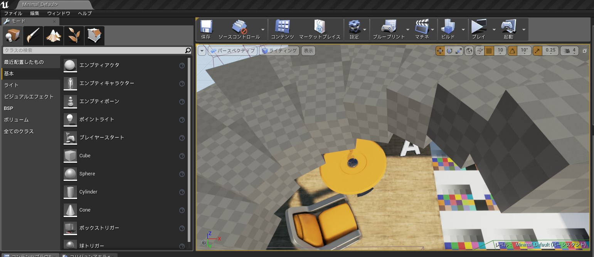
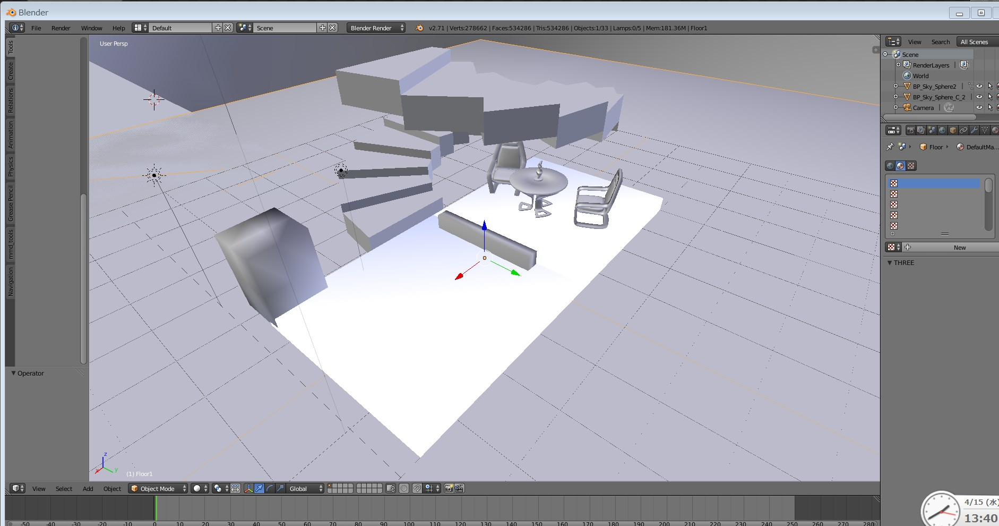

UE4を一ヶ月使ってみてまとめ
UE4からFBXにして、Unityに出力してみようとしてみたけど・・・ｗ

見事にテクスチャが出力先のフォルダに保存されてなかった・・・ｗ

ブループリントは可読性はあるけど、他のクラス（ブループリント）間の作業を書くのはしんどいような・・・ｗ あと、ゲーム作ってるとキャストがたくさんでてくる。それから、Staticな参照にもキャストがいる。さらに、継承元にアクセスするにもキャストがいる。なかなかこれだけに時間がかかる・・・ｗ
そして、最大のネックは資料とサンプルの少なさ。大きいサンプルじゃなくて、C#みたいにコピペできるリファレンスがいるかなって思う。それがなんでかUE4の情報を書いてるサイトだとブループリントの画像だけ貼ってあって、作るのにもいちいち手打ちしていく苦労・・・ｗ
まあ、こう書くと、ブループリントはいいところはないんだけど、デバッグのしやすさとかはVisualStudioを超えているね。視覚的にIf文とかの処理の流れを目でみれる。あと、テキストボックス処理とかシーンのストリーミング読み込みとかUnityではお金だしてやらないといけないことが無料でできる利点もある。
あと、UE４は情報量が大きいかなって思う。演算にもノードがあって、変数にもノードがあって、メソッドにもノードがあって、ノード数はものすごい量になる。確認する必要のないノードまで表示されてしまうなあっとｗ その情報をいちいち目で見て読めてしまうほどの可読性の高さが、逆に簡潔さがなくてコードの正しさが一目でわからない。ただ、UE4はUnityよりもゲームの起動速度が早いからデバッグも簡単にできてしまったり、視覚的に処理を終えたりするから、デメリットというデメリットではないのかもしれない。結局は使い慣れたものを使うのが一番いいのかなって思う
私はゲーム開発の経験も少ないから、UE4でわからない部分を考えるとすごく時間がかかる。新しいことになるとかなりの試行錯誤も必要になる。Unityだと調べれば済む話なのに・・・ってことで誰かUE４で頑張って開発してサンプルとかじゃんじゃん公開していってほしいなっと思うｗ